开场 & 政策背景
封面、以及国家与教育部的 AI 政策背景。
4 页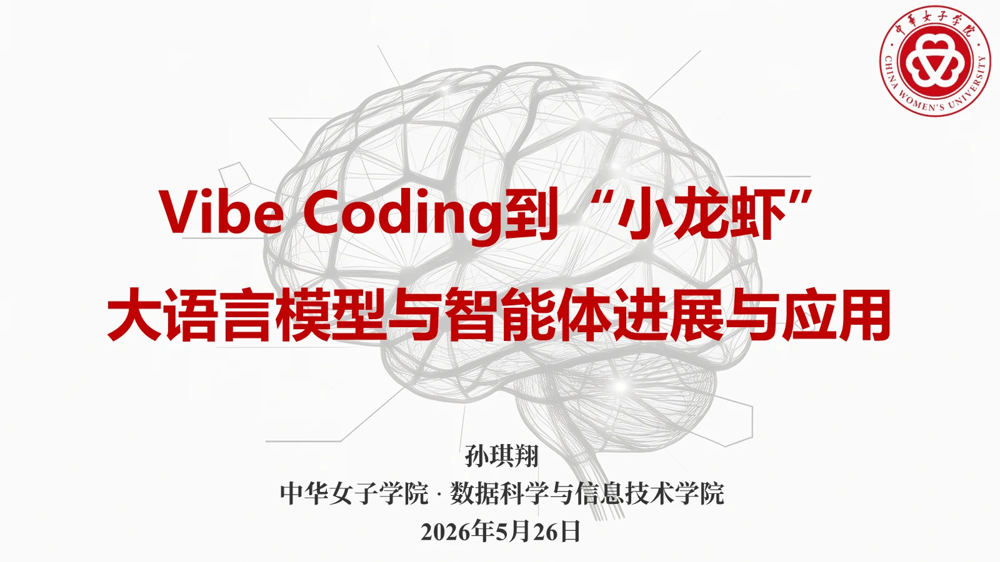
- 大语言模型与智能体进展与应用
- 孙琪翔 · 中华女子学院 · 数据科学与信息技术学院
- 2026 年 5 月 26 日
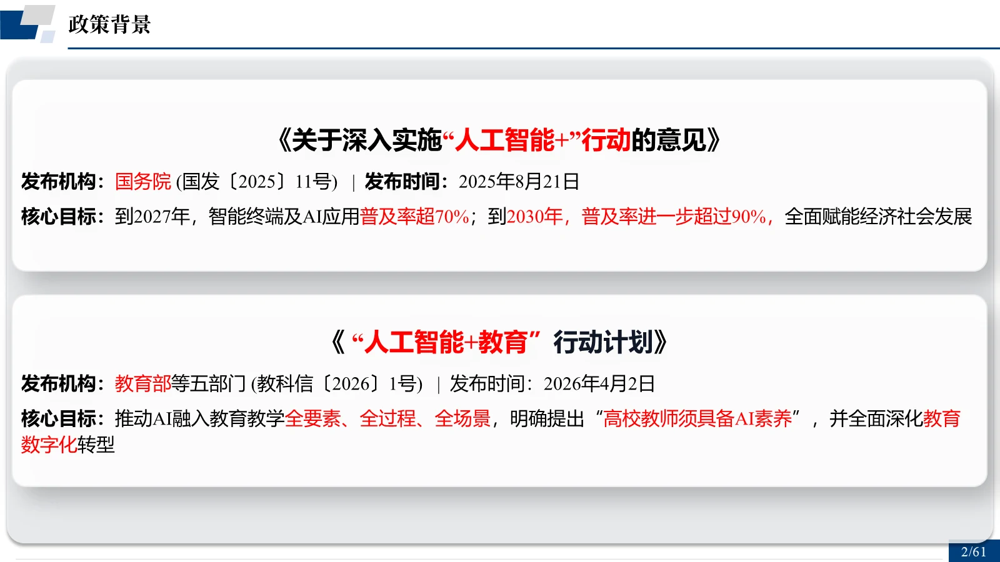
- 《关于深入实施“人工智能+”行动的意见》—— 国务院（国发〔2025〕11号），发布时间：2025 年 8 月 21 日。
- 核心目标：到 2027 年，智能终端及 AI 应用普及率超 70%；到 2030 年，普及率进一步超过 90%，全面赋能经济社会发展。
- 《“人工智能+”教育行动计划》—— 教育部等五部门（教科信〔2026〕1号），发布时间：2026 年 4 月 2 日。
- 核心目标：推动 AI 融入教育教学全要素、全过程、全场景，明确提出“高校教师须具备 AI 素养”，并全面深化教育数字化转型。
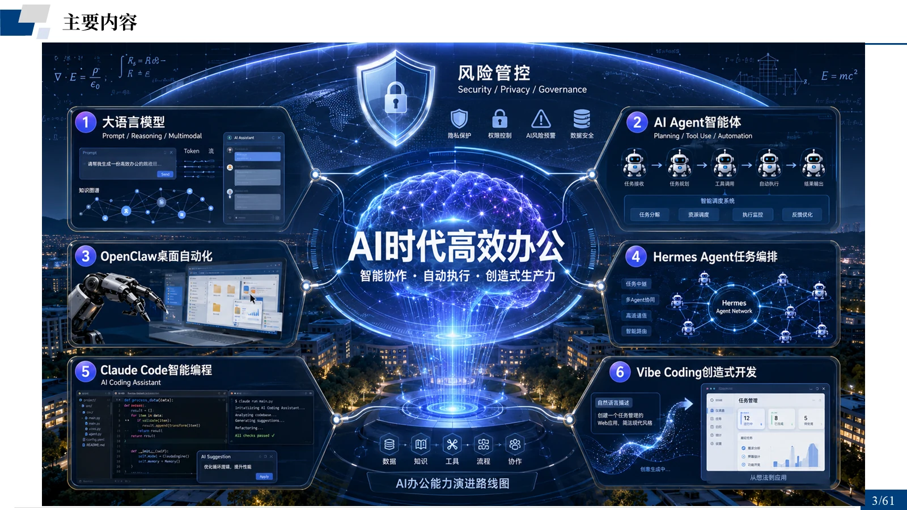
- 讲座整体框架与结构。
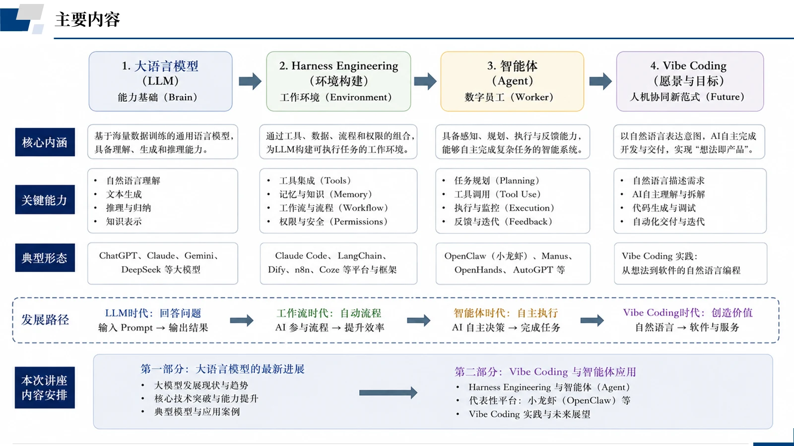
- 讲座整体框架与结构。
大语言模型发展现状
从 2022 到 2026 的三次飞跃，AI Index 报告、中美模型对比、投资与落地。
32 页- 章节引入。
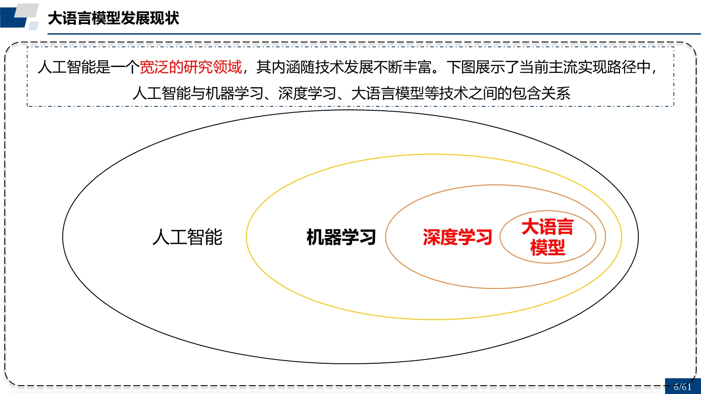
- 人工智能是一个宽泛的研究领域，其内涵随技术发展不断丰富。下图展示了当前主流实现路径中，人工智能与机器学习、深度学习、大语言模型等技术之间的包含关系。
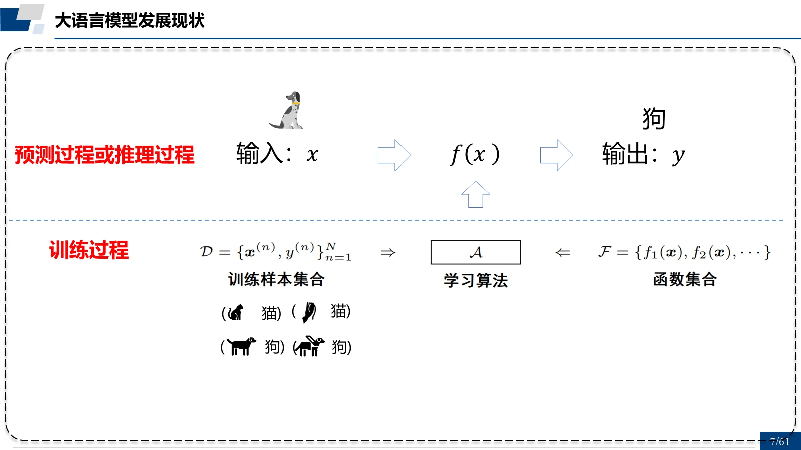
- 机器学习的两个关键阶段：训练过程 vs. 预测过程或推理过程。
- 示意图以图像分类为例：训练时让模型从带标签的样本中学习“猫／狗”的特征；预测时模型对新的输入给出类别判断。
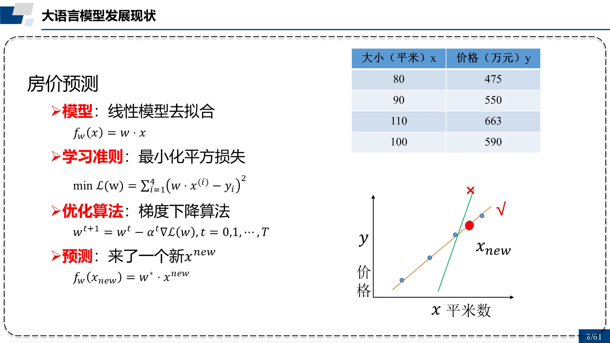
- 通过“平米数 → 价格”这样的连续变量示例，理解模型如何从数据中拟合规律（回归问题）。
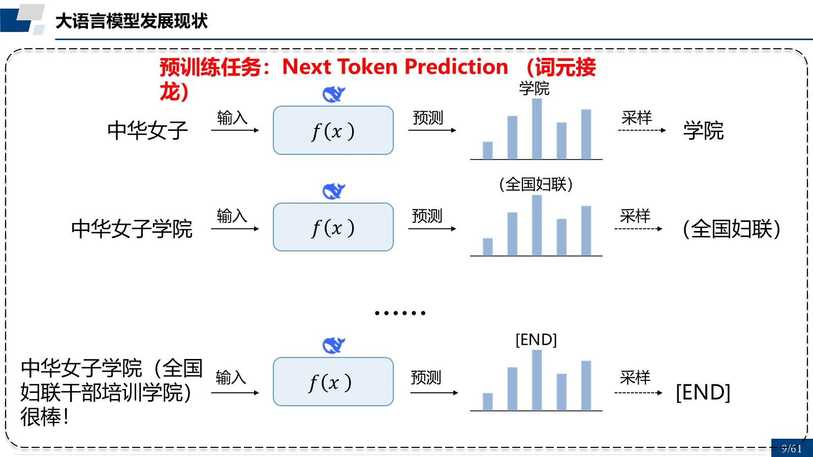
- 大语言模型预训练的核心任务是根据上文预测下一个词元（Token）。
- 示例：输入“中华女子学院”，模型逐步预测并采样出“（全国妇联）学院”，最终生成完整句子，并以 [END] 结束。
- 每一步都是“输入 → 预测 → 采样”的循环，形成流畅的文本生成能力。
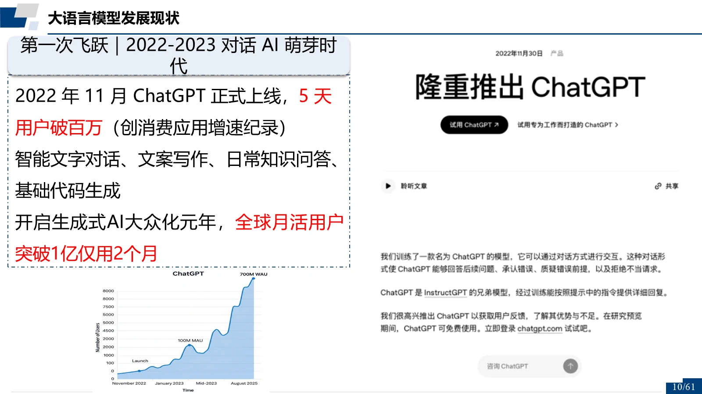
- 2022 年 11 月 ChatGPT 正式上线，5 天用户破百万，创消费应用增速纪录。
- 能力：智能文字对话、文案写作、日常知识问答、基础代码生成。
- 开启生成式 AI 大众化元年，全球月活用户突破 1 亿仅用 2 个月。
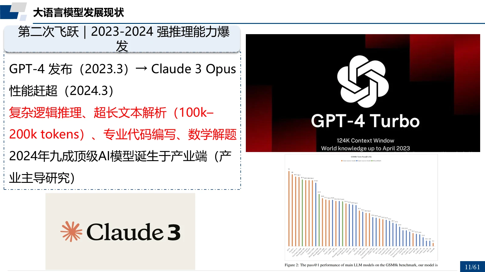
- GPT-4 发布（2023.3）→ Claude 3 Opus 性能赶超（2024.3）。
- 能力：复杂逻辑推理、超长文本解析（100k–200k tokens）、专业代码编写、数学解题。
- 2024 年九成顶级 AI 模型诞生于产业端（产业主导研究）。
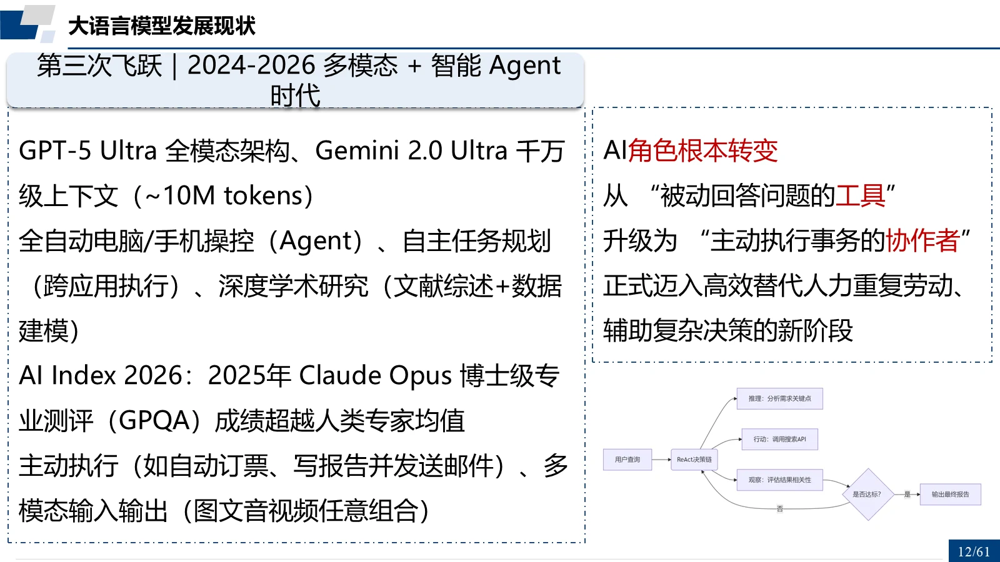
- GPT-5 Ultra 全模态架构、Gemini 2.0 Ultra 千万级上下文（~10M tokens）。
- 能力：全自动电脑/手机操控（Agent）、自主任务规划（跨应用执行）、深度学术研究（文献综述+数据建模）。
- AI Index 2026：2025 年 Claude Opus 博士级专业测评（GPQA）成绩超越人类专家均值。
- 主动执行（如自动订票、写报告并发送邮件）、多模态输入输出（图文音视频任意组合）。
- AI 角色根本转变：从“被动回答问题的工具”升级为“主动执行事务的协作者”，正式迈入高效替代人力重复劳动、辅助复杂决策的新阶段。
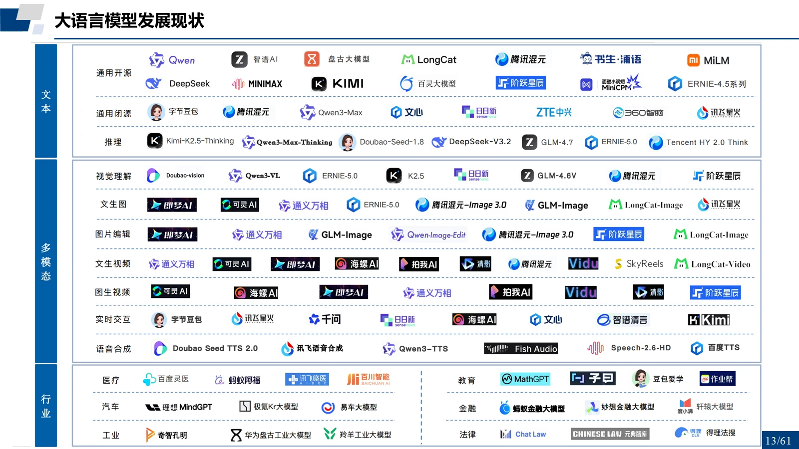
- 大语言模型发展现状。
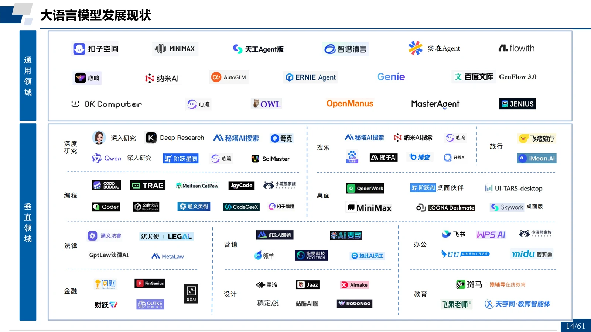
- 大语言模型发展现状。
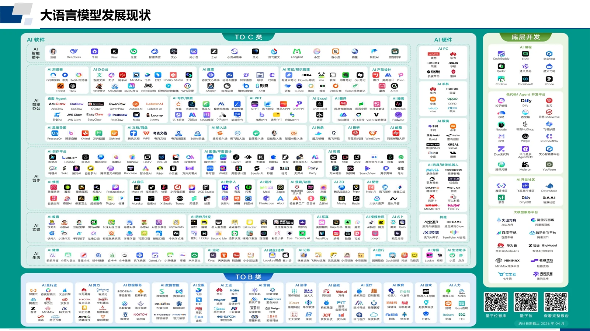
- 大语言模型发展现状。
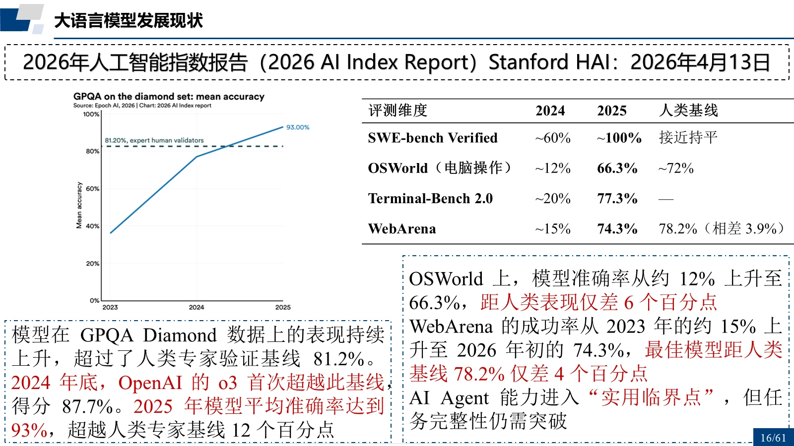
- 模型在 GPQA Diamond 数据上的表现持续上升，超过人类专家验证基线 81.2%。
- 2024 年底，OpenAI 的 o3 首次超越此基线，得分 87.7%；2025 年模型平均准确率达到 93%，超越人类专家基线 12 个百分点。
- OSWorld 上，模型准确率从约 12% 上升至 66.3%，距人类表现仅差 6 个百分点；WebArena 成功率从 2023 年的约 15% 上升至 2026 年初的 74.3%，最佳模型距人类基线 78.2% 仅差 4 个百分点。
- AI Agent 能力进入“实用临界点”，但任务完整性仍需突破。
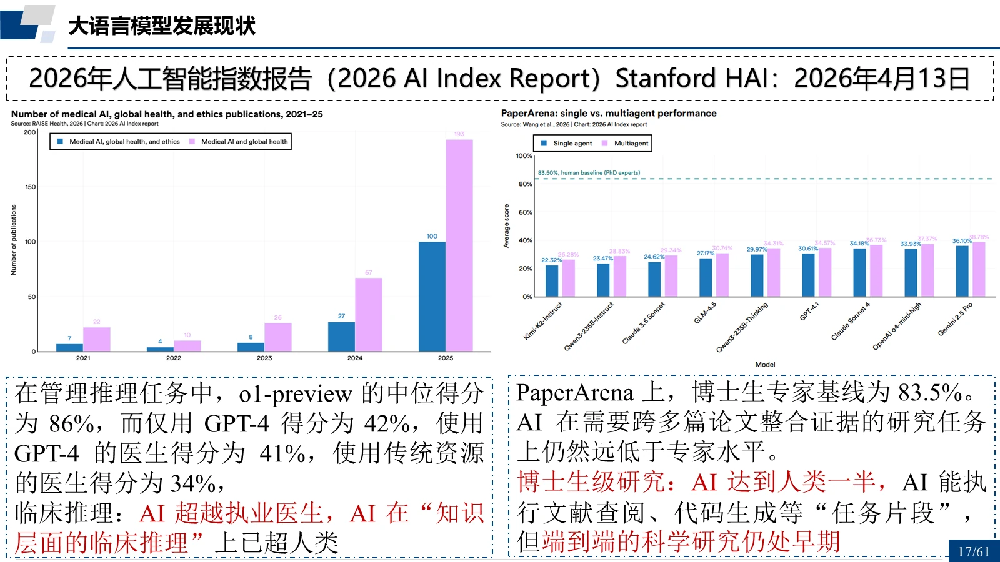
- 在管理推理任务中，o1-preview 中位得分 86%；仅用 GPT-4 得分 42%，使用 GPT-4 的医生得分 41%，使用传统资源的医生得分 34%。
- 临床推理：AI 超越执业医生，AI 在“知识层面的临床推理”上已超人类。
- PaperArena 上，博士生专家基线为 83.5%；AI 在需要跨多篇论文整合证据的研究任务上仍远低于专家水平。
- 博士生级研究：AI 达到人类一半，能执行文献查阅、代码生成等“任务片段”，但端到端的科学研究仍处早期。
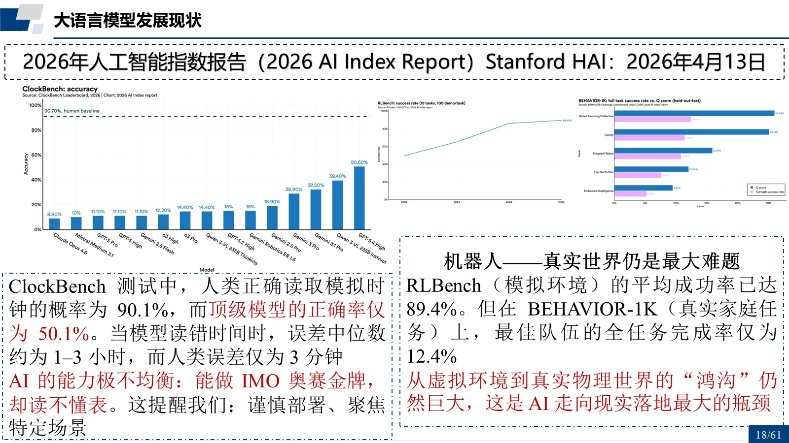
- ClockBench 测试中，人类正确读取模拟时钟的概率为 90.1%，而顶级模型仅 50.1%；模型读错时误差中位数约 1–3 小时，人类误差仅 3 分钟。
- AI 的能力极不均衡：能做 IMO 奥赛金牌，却读不懂表。这提醒我们：谨慎部署、聚焦特定场景。
- 机器人——真实世界仍是最大难题：RLBench（模拟环境）平均成功率已达 89.4%，但在 BEHAVIOR-1K（真实家庭任务）上最佳队伍的全任务完成率仅为 12.4%。
- 从虚拟环境到真实物理世界的“鸿沟”仍然巨大，这是 AI 走向现实落地最大的瓶颈。
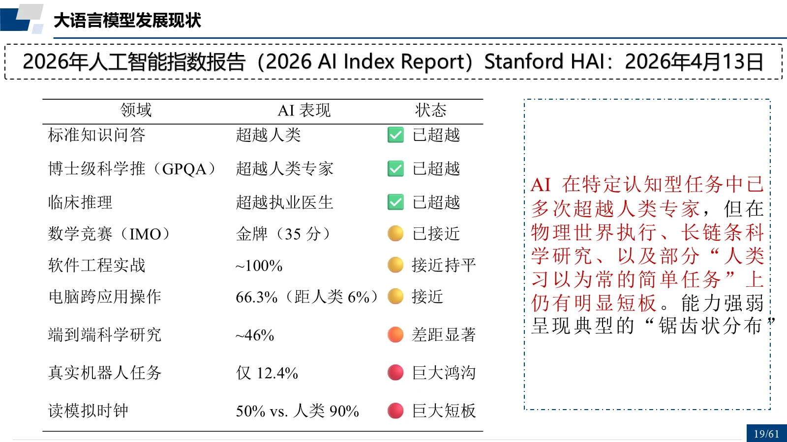
- AI 在特定认知型任务中已多次超越人类专家，但在物理世界执行、长链条科学研究、以及部分“人类习以为常的简单任务”上仍有明显短板。
- 能力强弱呈现典型的“锯齿状分布”。
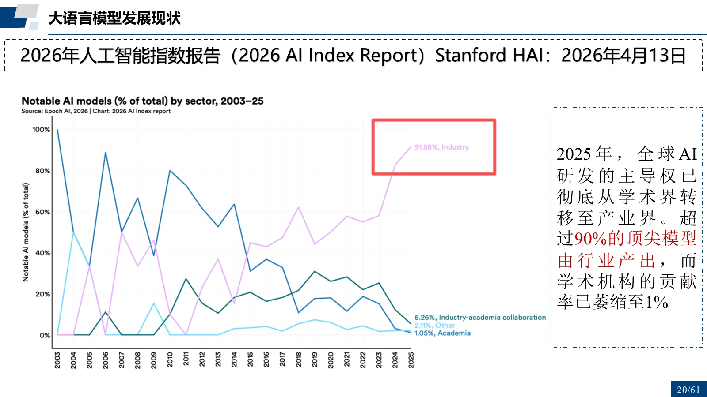
- 2025 年，全球 AI 研发的主导权已彻底从学术界转移至产业界。
- 超过 90% 的顶尖模型由行业产出，而学术机构的贡献率已萎缩至 1%。
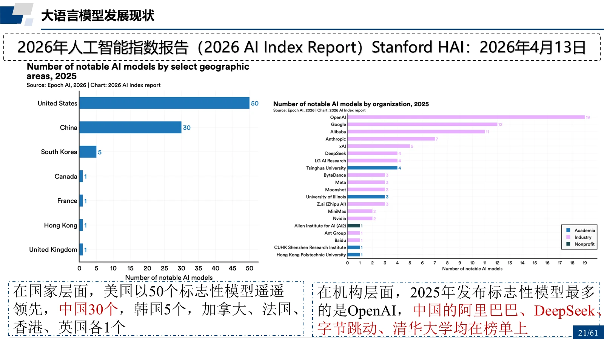
- 国家层面：美国以 50 个标志性模型遥遥领先，中国 30 个，韩国 5 个，加拿大、法国、香港、英国各 1 个。
- 机构层面：2025 年发布标志性模型最多的是 OpenAI。
- 中国的阿里巴巴、DeepSeek、字节跳动、清华大学均在榜单上。
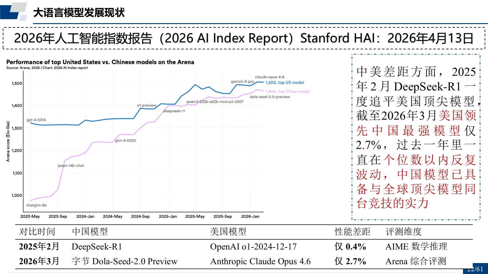
- 2025 年 2 月 DeepSeek-R1 一度追平美国顶尖模型。
- 截至 2026 年 3 月，美国领先中国最强模型仅 2.7%，过去一年一直在个位数以内反复波动。
- 中国模型已具备与全球顶尖模型同台竞技的实力。
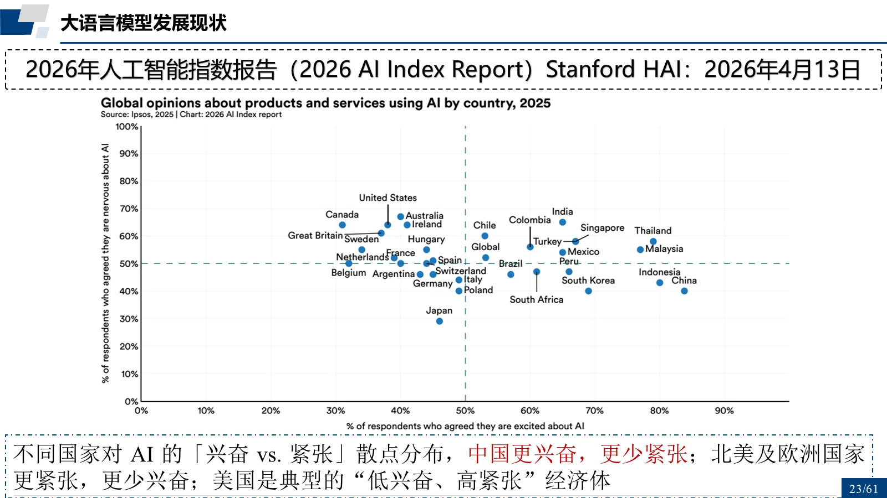
- 不同国家对 AI 的「兴奋 vs. 紧张」散点分布：中国更兴奋、更少紧张；北美及欧洲国家更紧张、更少兴奋。
- 美国是典型的“低兴奋、高紧张”经济体。
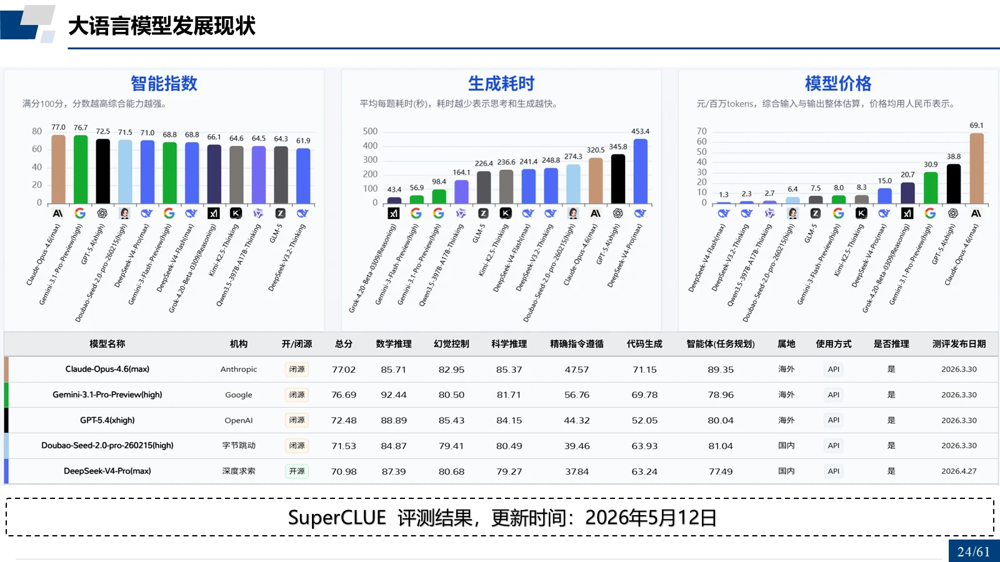
- SuperCLUE 评测结果，更新时间：2026 年 5 月 12 日。
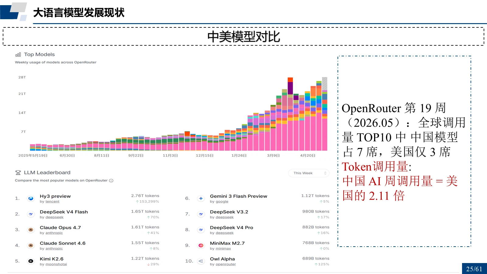
- OpenRouter 第 19 周（2026.05）：全球调用量 TOP10 中，中国模型占 7 席，美国仅 3 席。
- Token 调用量：中国 AI 周调用量 = 美国的 2.11 倍。
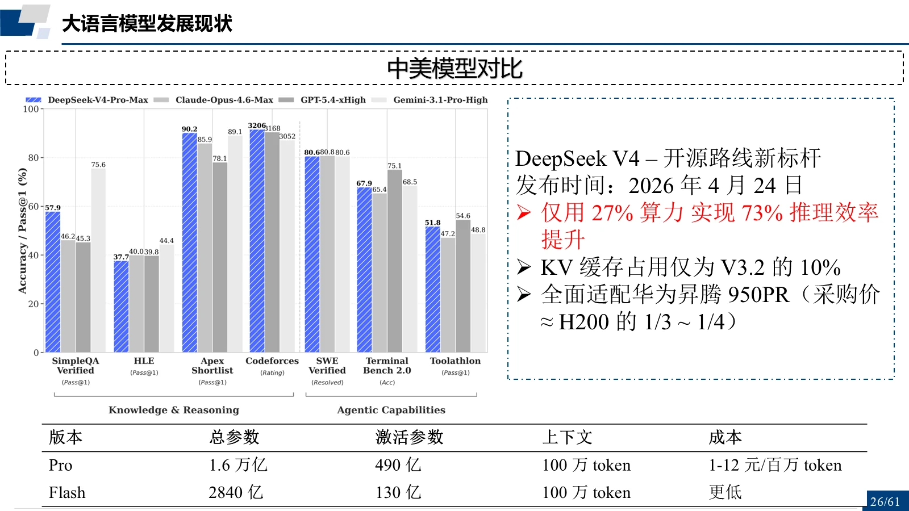
- DeepSeek V4 —— 开源路线新标杆。发布时间：2026 年 4 月 24 日。
- 仅用 27% 算力，实现 73% 推理效率提升；KV 缓存占用仅为 V3.2 的 10%。
- 全面适配华为昇腾 950PR（采购价 ≈ H200 的 1/3 ~ 1/4）。
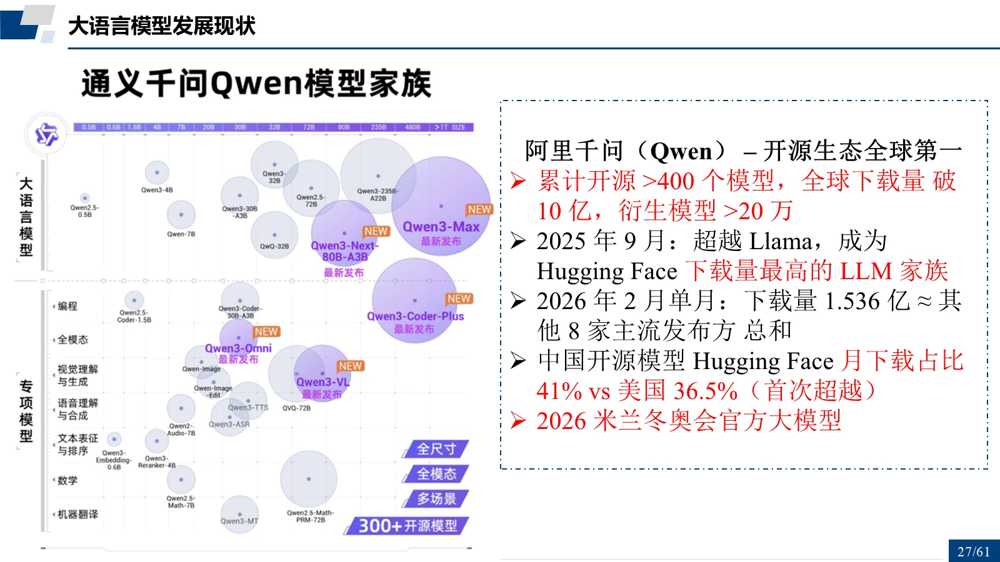
- 累计开源 >400 个模型，全球下载量破 10 亿，衍生模型 >20 万。
- 2025 年 9 月：超越 Llama，成为 Hugging Face 下载量最高的 LLM 家族。
- 2026 年 2 月单月下载量 1.536 亿，≈ 其他 8 家主流发布方总和。
- 中国开源模型 Hugging Face 月下载占比 41% vs 美国 36.5%（首次超越）。
- 2026 米兰冬奥会官方大模型。
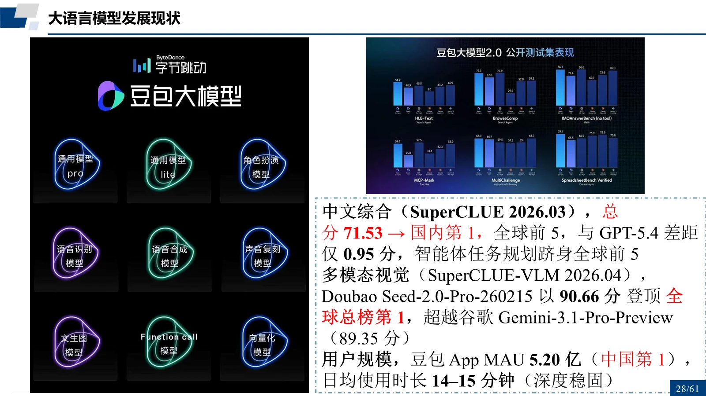
- 中文综合（SuperCLUE 2026.03）：总分 71.53，国内第 1，全球前 5，与 GPT-5.4 差距仅 0.95 分；智能体任务规划跻身全球前 5。
- 多模态视觉（SuperCLUE-VLM 2026.04）：Doubao Seed-2.0-Pro-260215 以 90.66 分登顶全球总榜第 1，超越谷歌 Gemini-3.1-Pro-Preview（89.35 分）。
- 用户规模：豆包 App MAU 5.20 亿（中国第 1），日均使用时长 14–15 分钟（深度稳固）。
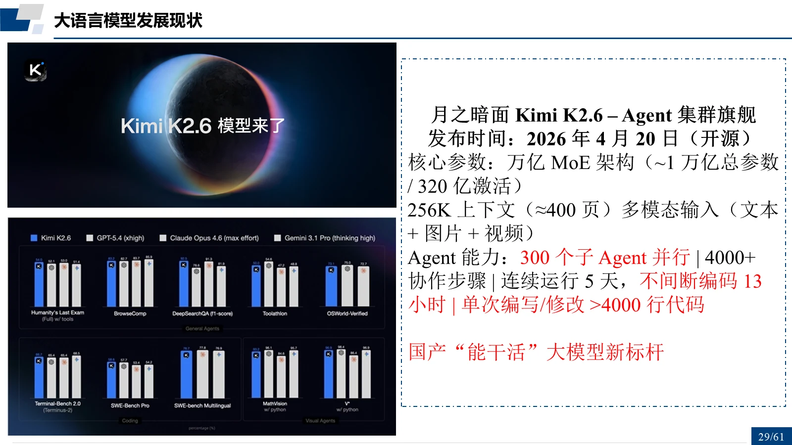
- 发布时间：2026 年 4 月 20 日（开源）。
- 核心参数：万亿 MoE 架构（~1 万亿总参数 / 320 亿激活）；256K 上下文（≈400 页）；多模态输入（文本+图片+视频）。
- Agent 能力：300 个子 Agent 并行、4000+ 协作步骤、连续运行 5 天、不间断编码 13 小时、单次编写/修改 >4000 行代码。
- 国产“能干活”大模型新标杆。
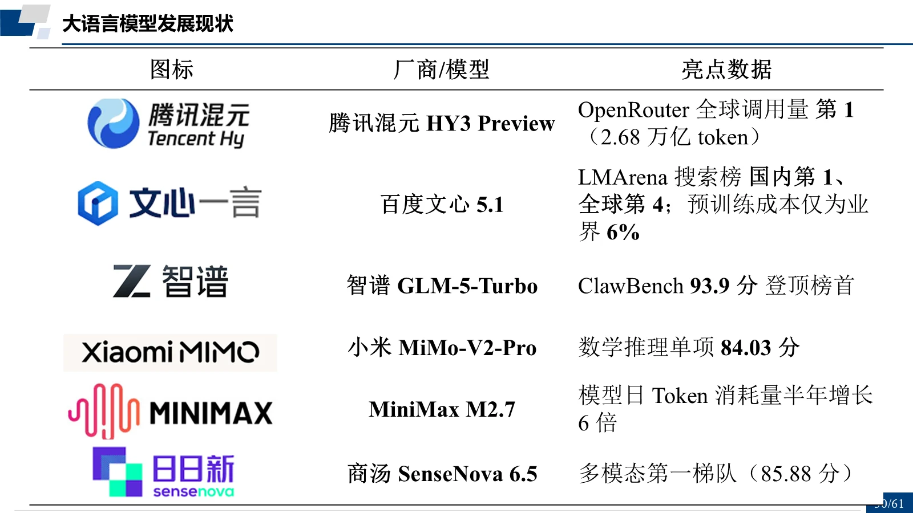
- 大语言模型发展现状。
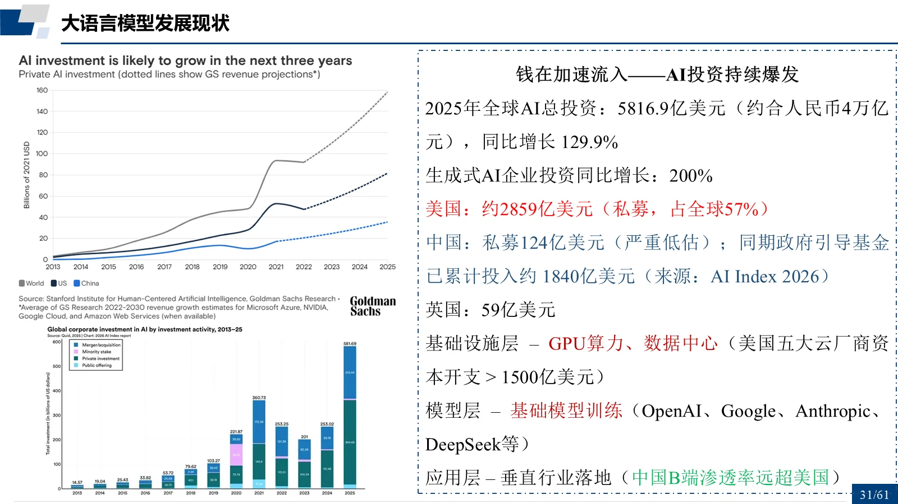
- 2025 年全球 AI 总投资 5816.9 亿美元（约合人民币 4 万亿元），同比增长 129.9%。
- 生成式 AI 企业投资同比增长 200%。
- 美国：约 2859 亿美元（私募，占全球 57%）；中国：私募 124 亿美元（严重低估），同期政府引导基金已累计投入约 1840 亿美元（来源：AI Index 2026）；英国：59 亿美元。
- 基础设施层（GPU 算力、数据中心——美国五大云厂商资本开支 > 1500 亿美元）、模型层（基础模型训练——OpenAI、Google、Anthropic、DeepSeek 等）、应用层（垂直行业落地——中国 B 端渗透率远超美国）。
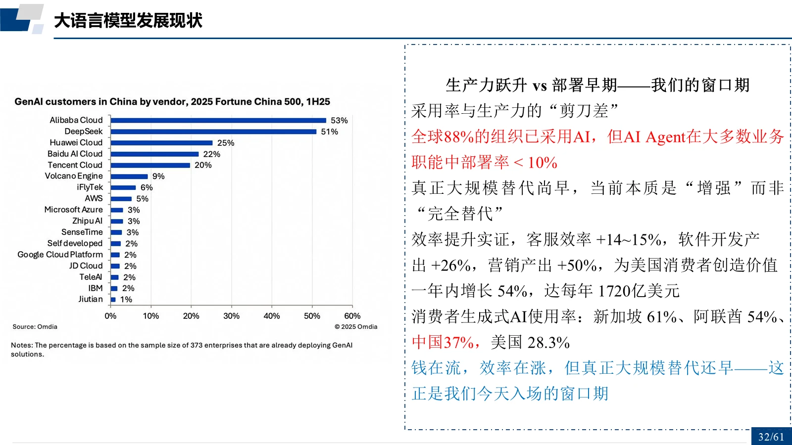
- 全球 88% 的组织已采用 AI，但 AI Agent 在大多数业务职能中部署率 < 10%。
- 真正大规模替代尚早，当前本质是“增强”而非“完全替代”。
- 效率提升实证：客服效率 +14~15%、软件开发产出 +26%、营销产出 +50%；为美国消费者创造价值一年内增长 54%，达每年 1720 亿美元。
- 消费者生成式 AI 使用率：新加坡 61%、阿联酋 54%、中国 37%、美国 28.3%。
- 钱在流、效率在涨，但真正大规模替代还早——这正是我们今天入场的窗口期。
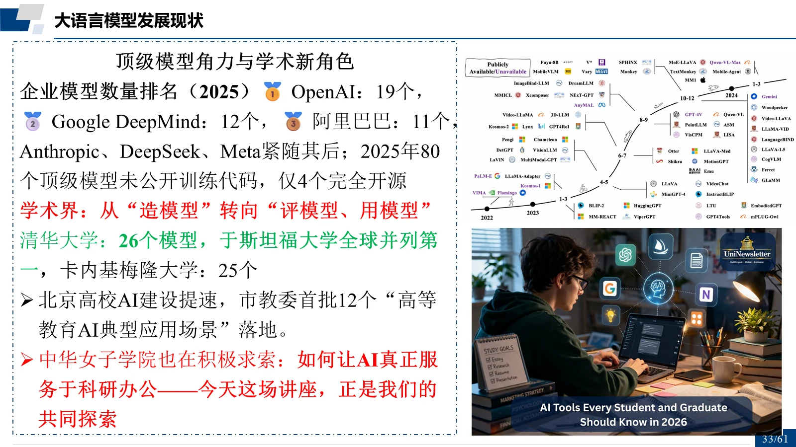
- 企业模型数量排名（2025）：OpenAI 19 个、Google DeepMind 12 个、阿里巴巴 11 个；Anthropic、DeepSeek、Meta 紧随其后。
- 2025 年 80 个顶级模型未公开训练代码，仅 4 个完全开源。
- 学术界：从“造模型”转向“评模型、用模型”。清华大学 26 个模型，与斯坦福大学全球并列第一；卡内基梅隆大学 25 个。
- 北京高校 AI 建设提速，市教委首批 12 个“高等教育 AI 典型应用场景”落地。
- 中华女子学院也在积极求索：如何让 AI 真正服务于科研办公——今天这场讲座，正是我们的共同探索。
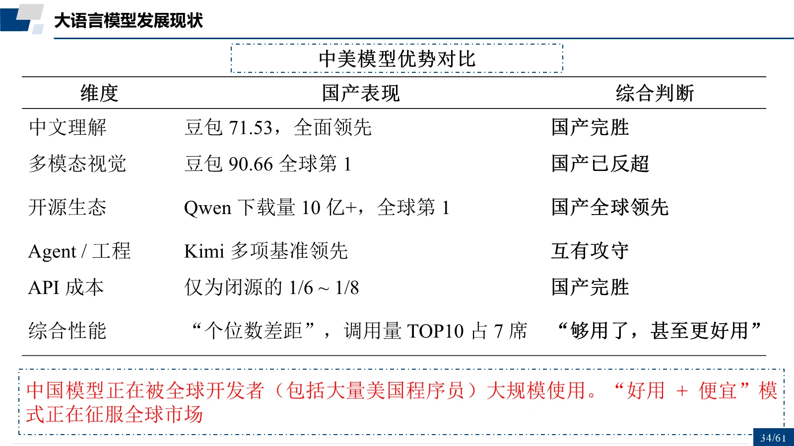
- 中国模型正在被全球开发者（包括大量美国程序员）大规模使用。“好用 + 便宜”模式正在征服全球市场。
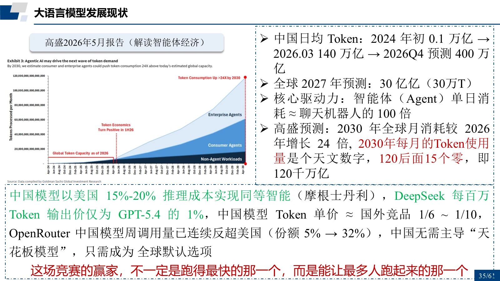
- 中国日均 Token：2024 年初 0.1 万亿 → 2026.03 140 万亿 → 2026Q4 预测 400 万亿。
- 全球 2027 年预测：30 亿亿（30 万 T）。
- 核心驱动力：智能体（Agent）单日消耗 ≈ 聊天机器人的 100 倍。
- 高盛预测：2030 年全球月消耗较 2026 年增长 24 倍；2030 年每月 Token 使用量是个天文数字，120 后面 15 个零，即 120 千万亿。
- 中国模型以美国 15%-20% 推理成本实现同等智能（摩根士丹利）；DeepSeek 每百万 Token 输出价仅为 GPT-5.4 的 1%；中国模型 Token 单价 ≈ 国外竞品 1/6 ~ 1/10；OpenRouter 中国模型周调用量已连续反超美国（份额 5% → 32%）。
- 中国无需主导“天花板模型”，只需成为全球默认选项。这场竞赛的赢家，不一定是跑得最快的那一个，而是能让最多人跑起来的那一个。
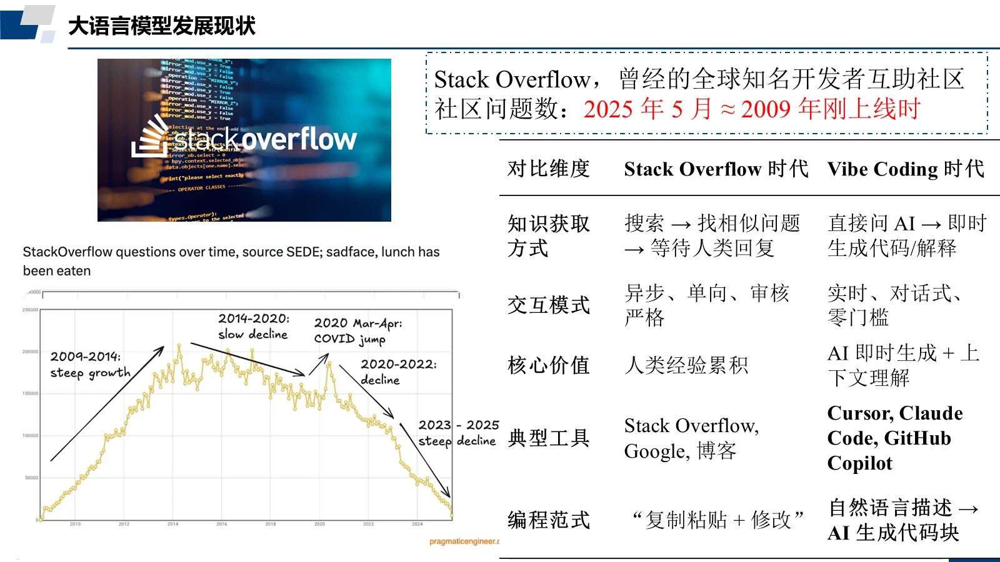
- Stack Overflow，曾经的全球知名开发者互助社区。
- 社区问题数：2025 年 5 月 ≈ 2009 年刚上线时。
智能体：科研办公新范式
Vibe Coding、Harness Engineering、OpenClaw「小龙虾」与 WorkBuddy。
25 页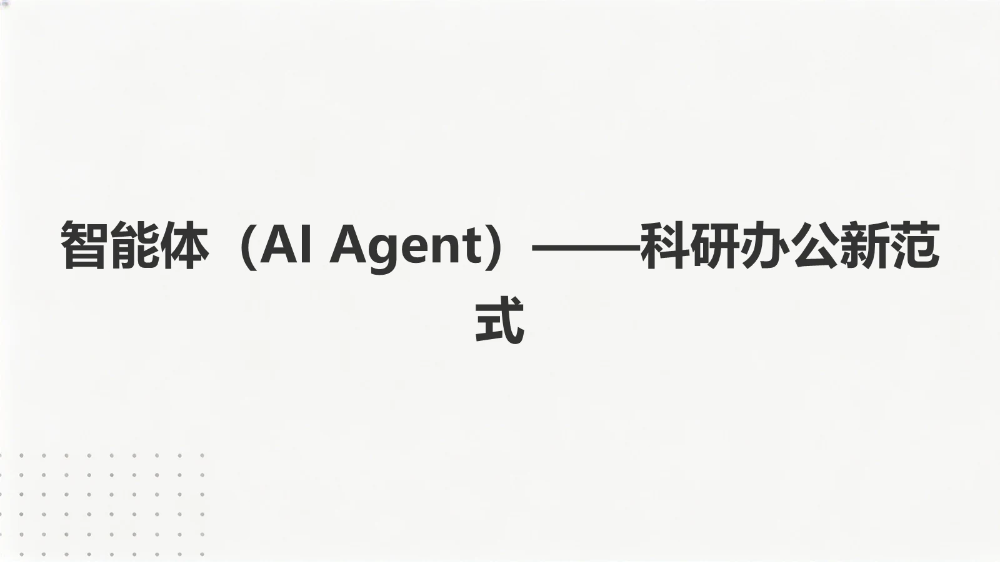
- 章节引入：智能体正在成为科研与办公的新范式。
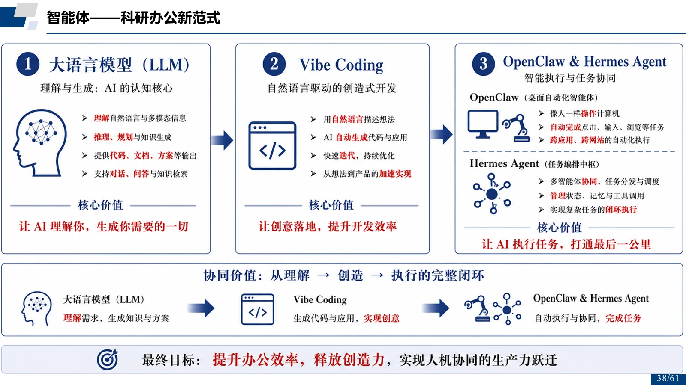
- 智能体（AI Agent）示意。
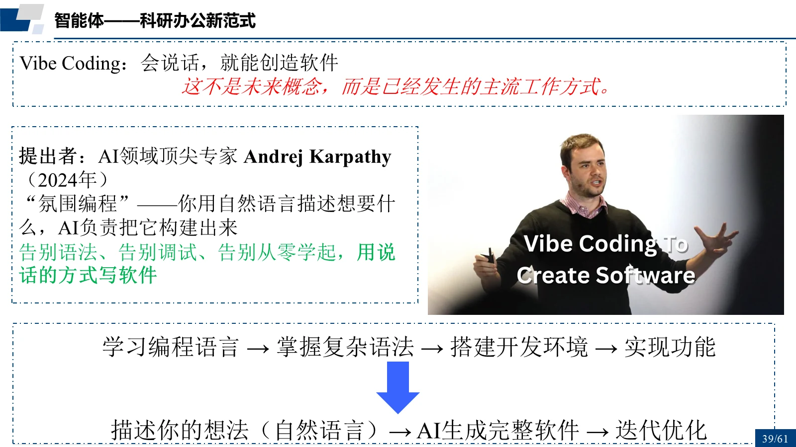
- 这不是未来概念，而是已经发生的主流工作方式。
- 提出者：AI 领域顶尖专家 Andrej Karpathy（2024 年）。“氛围编程”——你用自然语言描述想要什么，AI 负责把它构建出来。
- 告别语法、告别调试、告别从零学起，用说话的方式写软件。
- 对比传统路径：学习编程语言 → 掌握复杂语法 → 搭建开发环境 → 实现功能。
- Vibe Coding 路径：描述你的想法（自然语言）→ AI 生成完整软件 → 迭代优化。
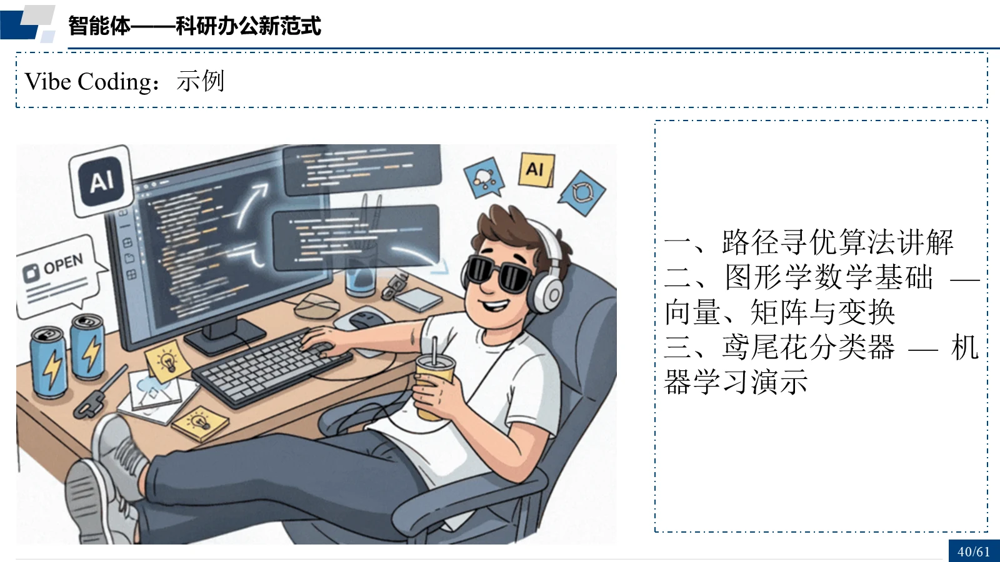
- 一、路径寻优算法讲解
- 二、图形学数学基础 —— 向量、矩阵与变换
- 三、鸢尾花分类器 —— 机器学习演示
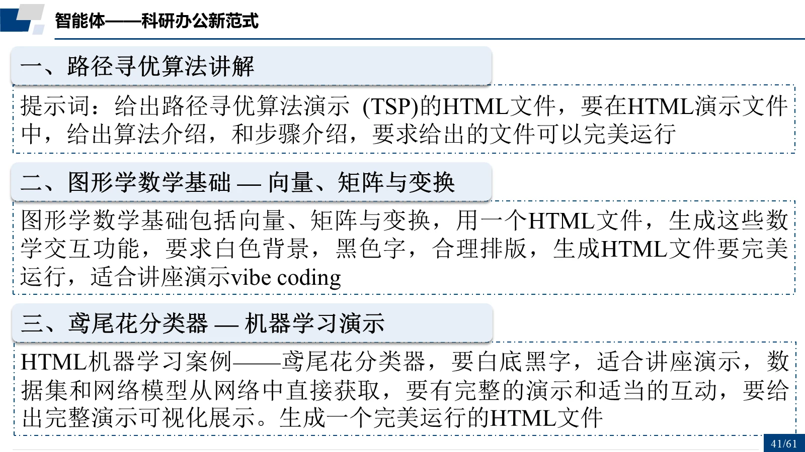
- 一、路径寻优算法讲解：提示词“给出路径寻优算法演示（TSP）的 HTML 文件，要在 HTML 演示文件中，给出算法介绍，和步骤介绍，要求给出的文件可以完美运行”。
- 二、图形学数学基础：提示词“图形学数学基础包括向量、矩阵与变换，用一个 HTML 文件，生成这些数学交互功能，要求白色背景、黑色字、合理排版，生成 HTML 文件要完美运行，适合讲座演示 Vibe Coding”。
- 三、鸢尾花分类器：提示词“HTML 机器学习案例——鸢尾花分类器，要白底黑字，适合讲座演示；数据集和网络模型从网络中直接获取；要有完整的演示和适当的互动；要给出完整演示可视化展示；生成一个完美运行的 HTML 文件”。
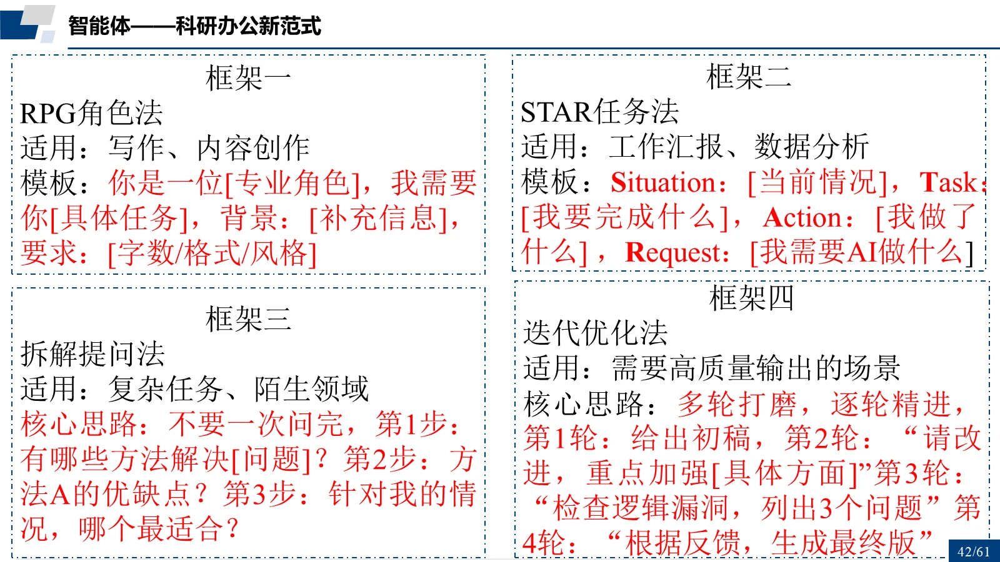
- 框架一：RPG 角色法 —— 适用：写作、内容创作。模板：你是一位[专业角色]，我需要你[具体任务]，背景：[补充信息]，要求：[字数/格式/风格]。
- 框架二：STAR 任务法 —— 适用：工作汇报、数据分析。模板：Situation：[当前情况]，Task：[我要完成什么]，Action：[我做了什么]，Request：[我需要 AI 做什么]。
- 框架三：拆解提问法 —— 适用：复杂任务、陌生领域。核心思路：不要一次问完。第 1 步：有哪些方法解决[问题]？第 2 步：方法 A 的优缺点？第 3 步：针对我的情况，哪个最适合？
- 框架四：迭代优化法 —— 适用：需要高质量输出的场景。核心思路：多轮打磨、逐轮精进。第 1 轮：给出初稿；第 2 轮：“请改进，重点加强[具体方面]”；第 3 轮：“检查逻辑漏洞，列出 3 个问题”；第 4 轮：“根据反馈，生成最终版”。
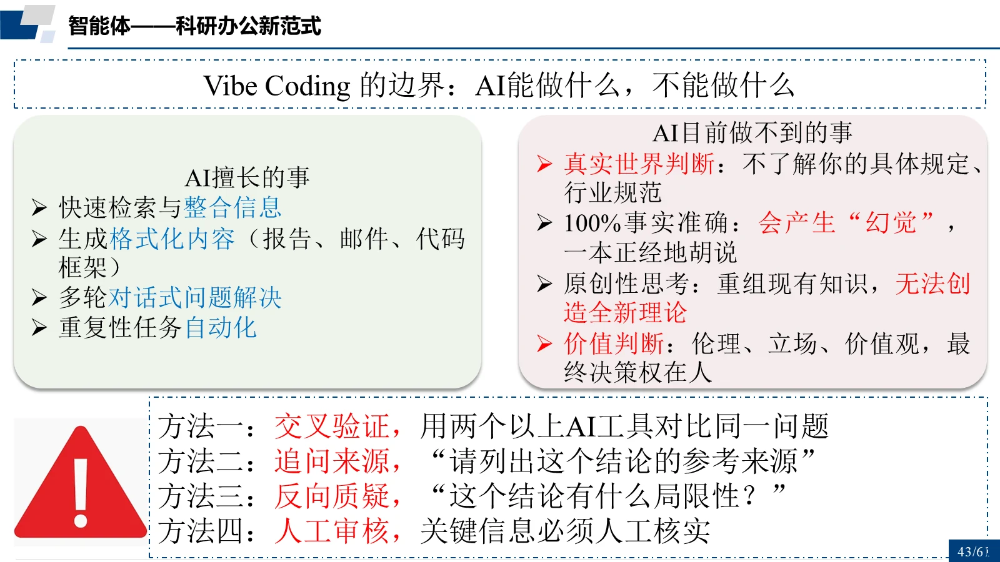
- AI 擅长的事：快速检索与整合信息；生成格式化内容（报告、邮件、代码框架）；多轮对话式问题解决；重复性任务自动化。
- AI 目前做不到的事：真实世界判断（不了解你的具体规定、行业规范）；100% 事实准确（会产生“幻觉”，一本正经地胡说）；原创性思考（重组现有知识，无法创造全新理论）；价值判断（伦理、立场、价值观，最终决策权在人）。
- 应对方法：方法一交叉验证——用两个以上 AI 工具对比同一问题；方法二追问来源——“请列出这个结论的参考来源”；方法三反向质疑——“这个结论有什么局限性？”；方法四人工审核——关键信息必须人工核实。
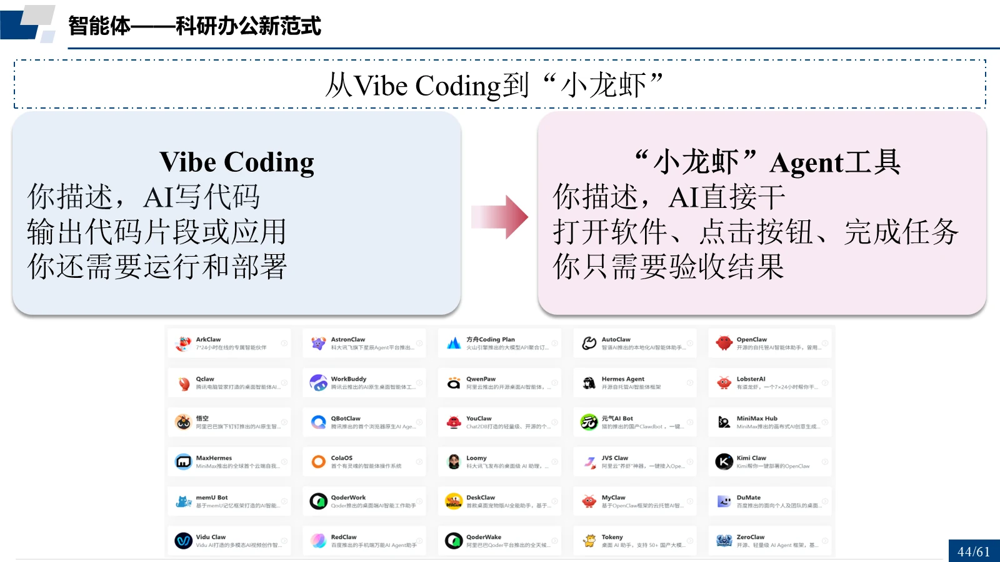
- Vibe Coding：你描述，AI 写代码；输出代码片段或应用；你还需要运行和部署。
- “小龙虾” Agent 工具：你描述，AI 直接干；打开软件、点击按钮、完成任务；你只需要验收结果。
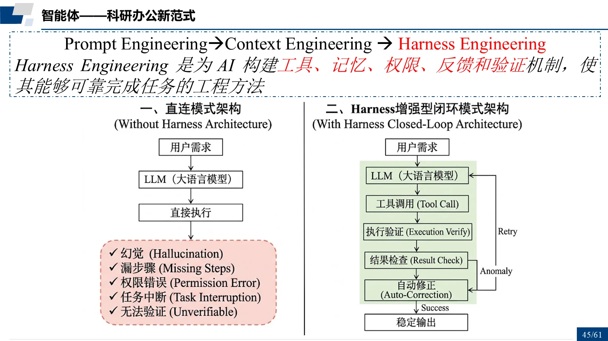
- 从 Prompt Engineering 到 Context Engineering，再到 Harness Engineering。
- Harness Engineering 是为 AI 构建工具、记忆、权限、反馈和验证机制，使其能够可靠完成任务的工程方法。
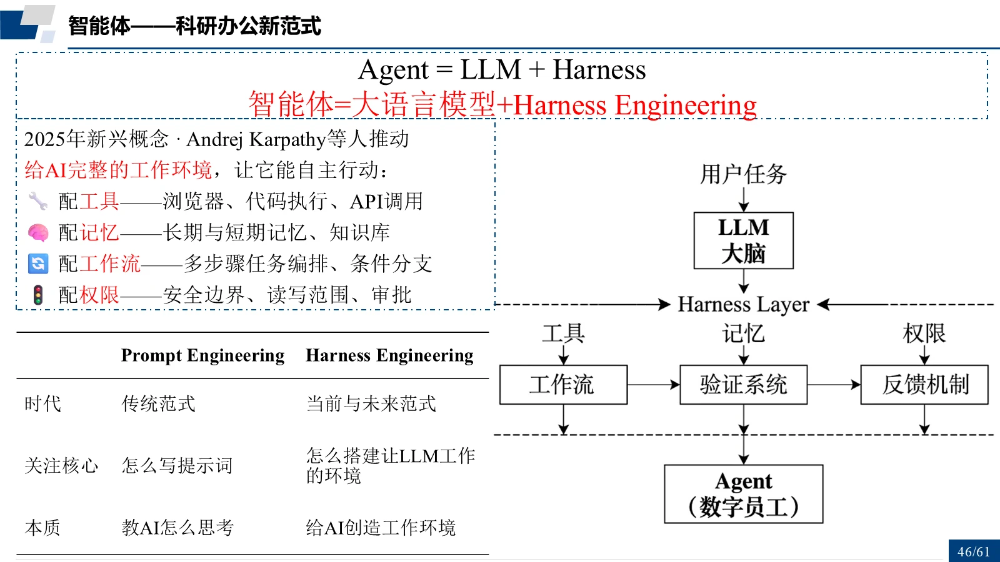
- 智能体 = 大语言模型 + Harness Engineering。
- 2025 年新兴概念 · Andrej Karpathy 等人推动。给 AI 完整的工作环境，让它能自主行动：
- 配工具——浏览器、代码执行、API 调用；配记忆——长期与短期记忆、知识库；配工作流——多步骤任务编排、条件分支；配权限——安全边界、读写范围、审批。
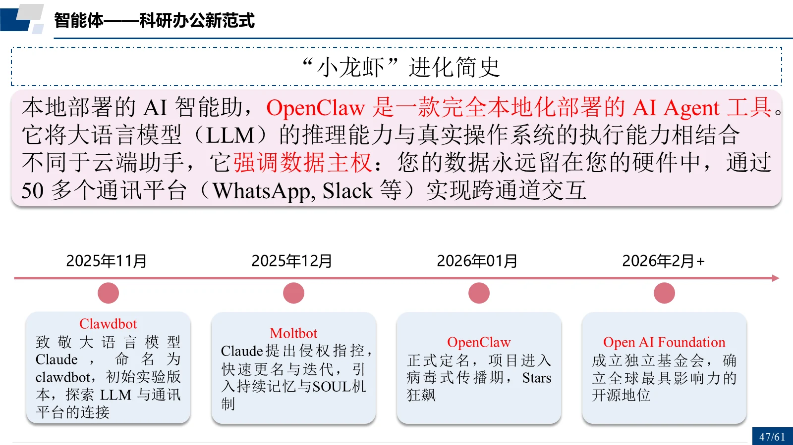
- 本地部署的 AI 智能助手：OpenClaw 是一款完全本地化部署的 AI Agent 工具，将大语言模型（LLM）的推理能力与真实操作系统的执行能力相结合。
- 不同于云端助手，它强调数据主权：您的数据永远留在您的硬件中，通过 50 多个通讯平台（WhatsApp、Slack 等）实现跨通道交互。
- 2025 年 11 月——Clawdbot：致敬大语言模型 Claude，命名 clawdbot，初始实验版本，探索 LLM 与通讯平台的连接。
- 2025 年 12 月——Moltbot：Claude 提出侵权指控，快速更名与迭代，引入持续记忆与 SOUL 机制。
- 2026 年 01 月——OpenClaw：正式定名，项目进入病毒式传播期，Stars 狂飙。
- 2026 年 2 月+——Open AI Foundation：成立独立基金会，确立全球最具影响力的开源地位。
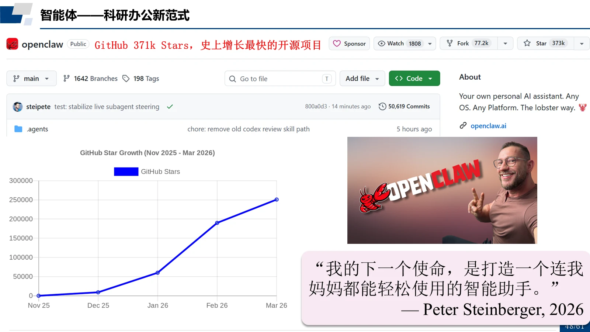
- “我的下一个使命，是打造一个连我妈妈都能轻松使用的智能助手。”——Peter Steinberger, 2026。
- GitHub 371k Stars，史上增长最快的开源项目。
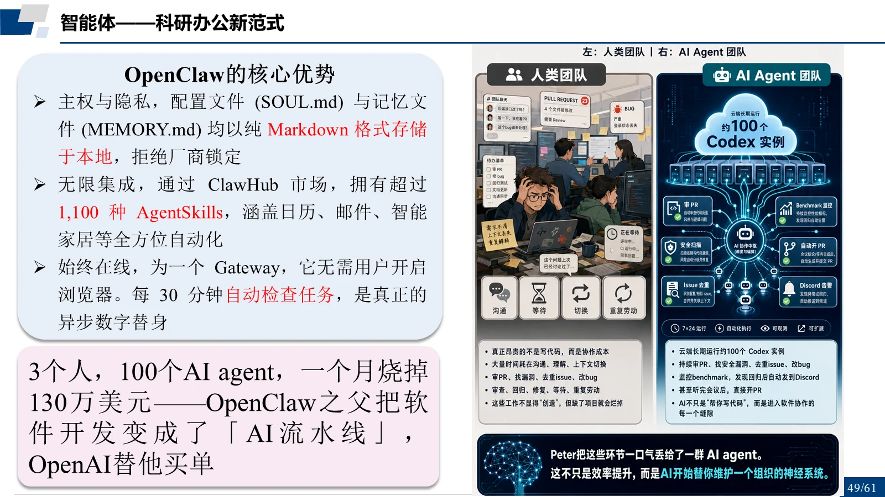
- 3 个人，100 个 AI agent，一个月烧掉 130 万美元——OpenClaw 之父把软件开发变成了「AI 流水线」，OpenAI 替他买单。
- OpenClaw 的核心优势——主权与隐私：配置文件（SOUL.md）与记忆文件（MEMORY.md）均以纯 Markdown 格式存储于本地，拒绝厂商锁定。
- 无限集成：通过 ClawHub 市场，拥有超过 1100 种 AgentSkills，涵盖日历、邮件、智能家居等全方位自动化。
- 始终在线：作为一个 Gateway，它无需用户开启浏览器，每 30 分钟自动检查任务，是真正的异步数字替身。
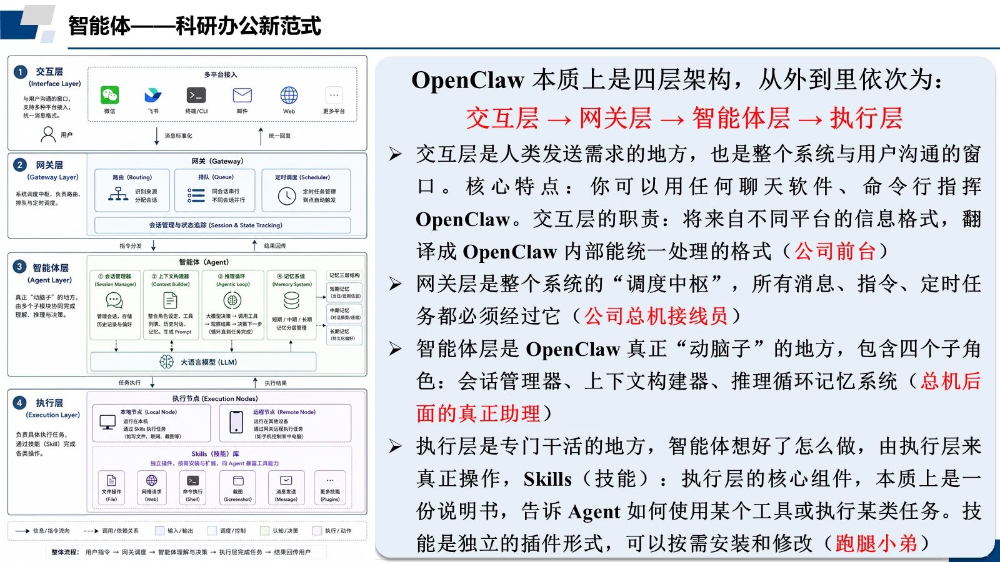
- OpenClaw 本质上是四层架构，从外到里依次为：交互层 → 网关层 → 智能体层 → 执行层。
- 交互层：人类发送需求的地方，也是整个系统与用户沟通的窗口。你可用任何聊天软件、命令行指挥它；职责是将不同平台的信息格式翻译成内部统一处理的格式（公司前台）。
- 网关层：整个系统的“调度中枢”，所有消息、指令、定时任务都必须经过它（公司总机接线员）。
- 智能体层：OpenClaw 真正“动脑子”的地方，包含会话管理器、上下文构建器、推理循环记忆系统（总机后面的真正助理）。
- 执行层：专门干活的地方，智能体想好后由执行层真正操作。Skills（技能）是执行层的核心组件，本质上是一份说明书，告诉 Agent 如何使用某个工具或执行某类任务，可独立插件形式按需安装和修改（跑腿小弟）。
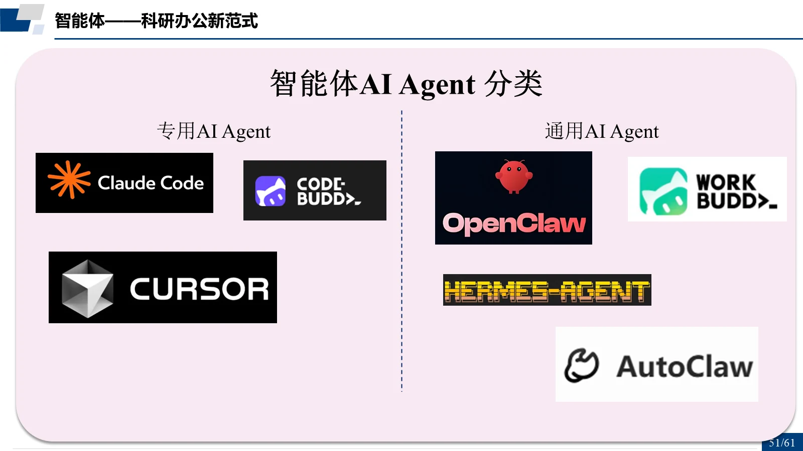
- 分为专用 AI Agent 与通用 AI Agent。
- 章节引入：WorkBuddy——科研办公新范式的落地工具。
- WorkBuddy 常用命令速览。
- WorkBuddy 工具界面。
- WorkBuddy 使用技巧分享。
- 为了方便演示，没有配置聊天软件的接入；聊天软件看似酷炫，本质只是输入的窗口不同。
- 【技能安装】直接对话【配置技能】中需要的 API key（如 gemini），才能使用 nano banana pro 技能，画图【生成图像】。
- 论文整理：生成综述并发送到我的邮箱。
- 有什么想要龙虾完成的工作，可以试试【制作简历】龙虾的简历：把你的简历发给我看看，放到桌面，同时发送到我的邮箱 qixiangsun@126.com，我要看好看的简历。
- WorkBuddy 实际使用截图演示。
- 文献综述案例演示。
- 示例指令一：请检索与以下研究主题相关的学术文献：“大语言模型的性别偏见领域研究”。要求：1、近 5 年的研究论文；2、优先选择高质量期刊或会议论文；3、输出至少 20 篇文献；4、每篇文献提供以下信息：论文标题、作者、发表年份、研究方法、研究结论。
- 示例指令二：新建一个找工作的自动化任务，监测网上适合中华女子学院数据科学与信息技术学院毕业生的工作，自动安装并使用合适的 skills，每天早上 8 点把找到的工作附上连接，合理排版后，发到我的邮箱：qixiangsun@126.com。（126 邮箱授权码见讲座演示）
- 示例指令三：认识自我——根据我和你的互动历史，分析我的优势和劣势。使用合适的 skills，可以自动安装。
- WorkBuddy 使用注意事项。
- 办公 AI 工具推荐。
结语
保持乐观，持续前行。
1 页- “I'd rather be optimistic and wrong than pessimistic and right.”——Elon Musk。
- 悲观的人永远正确，乐观的人永远前行。